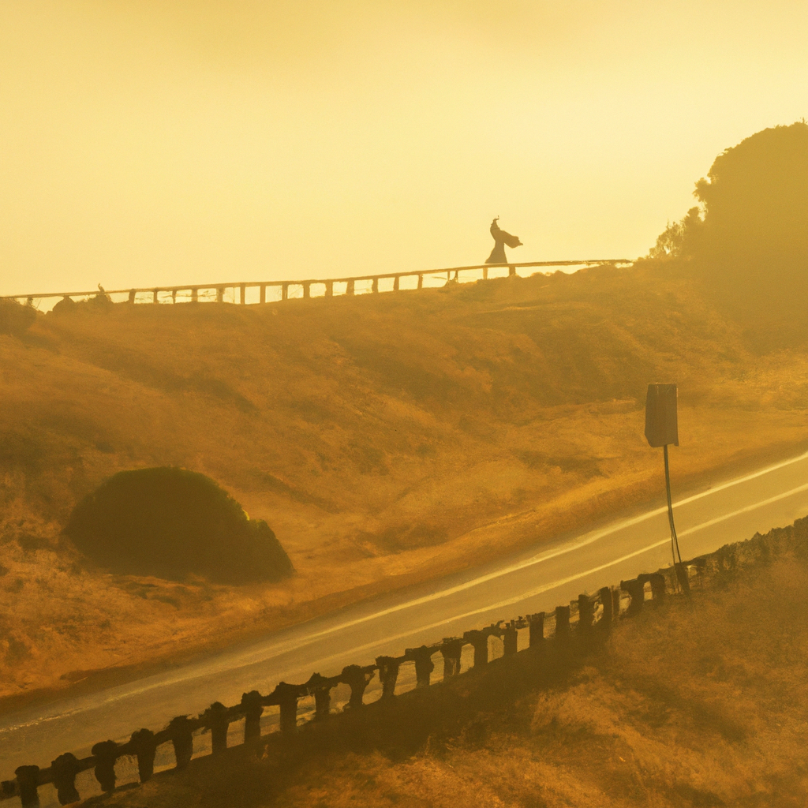

At dawn, the ocean road lay hidden beneath a blanket of fog. The runner tightened her shoelaces, heart steady with anticipation. With the first footfall on damp asphalt, she felt the world mute around her: muffled waves, hushed gull cries, soft hiss of tires on wet pavement. Her breath rose in plumes before her mask, merging with the mist that wove itself among streetlights glowing pale gold.
As she picked up pace, each footfall became a heartbeat syncing with the tide’s pulse. The fog swallowed landmarks—a bench, a rusted railing, a distant pier—until only the immediate moment remained. She focused on the feel of her calves flexing, the slight give of sand spilling onto the path, the soft squeak of her shoes. In this narrowing lens, nothing beyond the next stride existed.
Her thoughts, usually crowded with meetings, deadlines, and errands, slipped away like footprints in wet sand. She let go of tomorrow’s worries, allowing the fog to absorb them. Every inhale tasted of salt and possibility, every exhale released a quiet resolve. The sea’s steady rhythm mirrored her own, a gentle metronome guiding her forward through the gray hush.
A faint silhouette emerged: a lone gull perched atop a driftwood log, wings tucked, watching her approach. She slowed, heart lightening at the sight of a fellow traveler. The bird lifted off just as she neared, tracing an arc against the mist, its wings catching the first glow of sunrise. A slash of gold cut through the gray, reminding her of hidden color waiting to break through.
She paused at the water’s edge, where waves whispered against the shore. Droplets settled on her hair, cool and reassuring. She closed her eyes and let the world tilt into balance: the swell beneath her feet, the soft murmur of the ocean, the pale sun diffusing light like a promise. In that stillness, she found an anchor, a steady point in the drifting haze.
Restarting, she ran with renewed clarity. The fog began to thin, unveiling shards of blue sky and distant cliffs. Patches of sand glowed white, sea foam tracing lace patterns along the shoreline. Each sight felt like a gift, carefully revealed. Her breath grew easier, her steps lighter. The path ahead unfolded inch by inch, drawing her forward with gentle insistence.
When the final veil of mist lifted, the horizon lay written in bold lines: rolling waves tumbling toward a fiery sun. She splayed her arms, breathing in gold and salt and promise. Clarity settled in her chest, a warmth that outshone the sun. Every worry left behind dissolved into open air, leaving only purpose and breath and the rhythmic cadence of her heart.
Turning to head home, she carried the sea’s quiet wisdom with her. The fog might return, as it always does, but so would her newfound clarity—a beacon shining steady, even when the world faded to gray. With each stride back, she held the horizon inside herself, ready for whatever tomorrow’s mist might bring.
